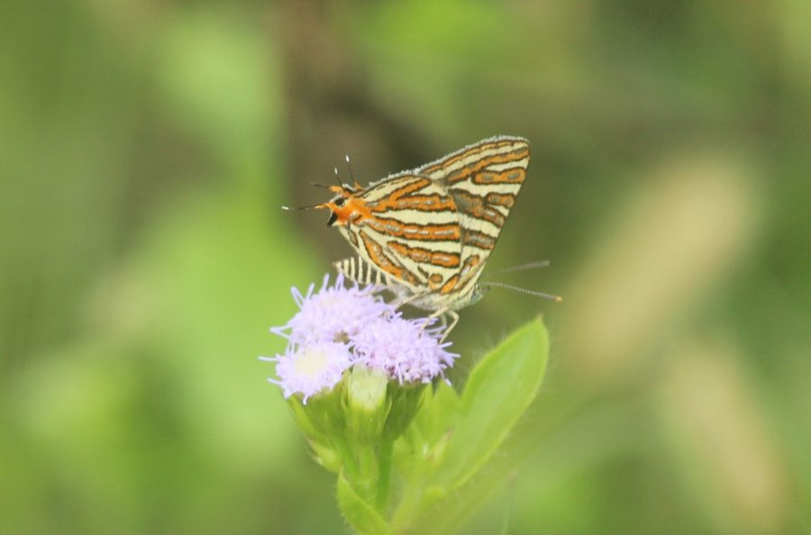

कॉमन सिल्वरलाइन तितलीCommon Silverline
Spindasis vulcanus · Lycaenidae · INS-0194

- Scientific name वैज्ञानिक नाम
- Spindasis vulcanus (Fabricius, 1775)
- Family कुल
- Lycaenidae
- Hindi हिंदी
- कॉमन सिल्वरलाइन तितली
- Local names स्थानीय नाम
- common silverline, silverline titli, common silverline butterfly, chandi-rekha titli
- Status here यहाँ की स्थिति
- native
- Movement आवागमन
- Resident, here all year
- Known from कहाँ दर्ज
- Others have published records from the wider Awadh–Purvanchal plain, none yet from Basti–Ayodhya अवध–पूर्वांचल से दूसरों के प्रकाशित अभिलेख, बस्ती–अयोध्या से अभी नहीं
- IUCN IUCN
- not evaluated
- Review समीक्षा
- not yet reviewed
When to look कब देखें
Present all year. साल भर मौजूद।
Uses and possibilities उपयोग और संभावनाएँ
Drawn from the documented uses in the profile below, where each is labelled traditional, current or a research lead. All uses →
Tell it apart from इनसे अलग पहचानें
कॉमन सिल्वरलाइन तितली / Common Silverline
Spindasis vulcanus (Fabricius, 1775) — Lycaenidae
कॉमन सिल्वरलाइन तितली — कटीली झाड़ियों, बबूल के पेड़ों और खेतों की मेड़ों पर पाई जाने वाली एक अत्यंत आकर्षक छोटी तितली है। इसके पंखों का निचला हिस्सा हल्के पीले रंग का होता है, जिस पर नारंगी रंग की पट्टियाँ होती हैं और उन पट्टियों के बीच में चांदी जैसी चमकती रेखाएं खिंची होती हैं। पिछले पंखों पर दो महीन पूँछें और नारंगी-काले धब्बे होते हैं। इसके कैटरपिलर बबूल और बेर पर पलते हैं और चींटियों के घोंसलों में रहते हैं।
Quick Identification त्वरित पहचान
| Feature | Description |
|---|---|
| Size | Small butterfly; wingspan 26–34 mm (Kehimkar 2008) |
| Upperside Ground | Dark brown marked with tawny-orange patches and spots (Evans 1932) |
| Forewing Upperside | Orange discal spots and streaks in cell (Bingham 1907) |
| Tornal Eye-spots | Large orange-red tornal patch with black spots on hindwing (Wynter-Blyth 1957) |
| Underside Pattern | Pale canary yellow crossed by broad orange-red bands centered with silver (Kehimkar 2008) |
| Silverlines | Bright, metallic silver-gilt central lines running down the orange bands (Kehimkar 2008) |
| Tails | Two distinct, slender black tails tipped with white at veins 1b and 2 (Bingham 1907) |
Field tip: Look along sunny acacia hedgerows, thorny fences, and open scrub wastelands. When settled on a sunlit twig with its wings folded vertically, the canary-yellow underside crossed by orange bands with gleaming metallic silver centres is unmistakable.
हिंदी: बबूल और कटीली झाड़ियों पर बैठने वाली इस तितली के निचले पंखों पर नारंगी पट्टियों के बीच चमकती चांदी जैसी रेखाएं होती हैं। इसके पिछले पंखों पर दो पूँछें होती हैं।
Morphology आकारिकी
Biometrics recorded from adult museum specimens and regional Indian monographs (Kehimkar 2008; Evans 1932):
| Measurement | Range | Source |
|---|---|---|
| Wingspan | 26–34 mm | Kehimkar (2008) |
Adult description: The Common Silverline is an exquisite lycaenid butterfly displaying moderate sexual dimorphism and distinct seasonal polyphenism between wet and dry broods (Bingham 1907). In males, the upperside ground colour is rich dark brown (Evans 1932). The forewing bears several bright tawny-orange spots: two elongate streaks in the discoidal cell, an oblique postdiscal series of spots, and submarginal orange dashes (Bingham 1907). In females, the tawny-orange markings on both wings are broader, brighter, and more extensive (Wynter-Blyth 1957).
The hindwing upperside carries a large, bright orange tornal patch that encloses two velvety black spots (Kehimkar 2008). Arising from the tornus are two delicate filamentous black tails tipped with pure white: a longer tail at vein 1b and a slightly shorter tail at vein 2 (Bingham 1907).
The underside provides an extraordinary spectacle: the ground colour is bright canary-yellow or warm ochreous-yellow (Kehimkar 2008). Both wings are crossed by a series of bold, rich reddish-orange transverse bands bounded by sharp black margins (Bingham 1907). Running right through the centre of each orange band is a continuous, glittering streak of metallic silver or polished steel (Wynter-Blyth 1957). The antennae are black ringed with white; the eyes are smooth and brown.
Larval Stage इल्ली अवस्था
The mature caterpillar is onisciform, flattened, dull greenish-brown or reddish-grey, and marked with darker dorsal chevrons. The larva is an obligate myrmecophile, possessing specialized honey glands on the dorsal abdominal segments that produce amino-acid-rich secretions for Crematogaster cocktail ants (Kehimkar 2008). The pupa is dark reddish-brown, smooth, and typically formed inside the carton nests or galleries of its host ants (Kehimkar 2008).
हिंदी: इसका पंखों का फैलाव 26 से 34 मिमी होता है। ऊपरी पंख भूरे और नारंगी होते हैं, जबकि नीचे का हिस्सा चमकीला पीला होता है जिस पर चांदी जैसी रेखाएं होती हैं।
Behaviour & Ecology व्यवहार और पारिस्थितिकी
The Common Silverline is an alert, sun-loving butterfly of arid scrub, thorn forests, village commons, and agricultural borders (Kehimkar 2008). It requires high ambient temperatures for sustained activity and is most energetic during sunny mornings and early afternoons (Wynter-Blyth 1957). Flight is swift, buzzing, and erratic, rarely sustained for more than a few metres before the butterfly abruptly drops onto a sunlit leaf or thorny sprig (Wynter-Blyth 1957).
Males are combative and vigorously defend perches on exposed outer branches of Acacia or Ziziphus bushes, darting out to challenge passing insects before wheeling back to their chosen perch (Kehimkar 2008). When perched with wings tightly closed, the butterfly frequently twitches its hindwings back and forth in an alternating rhythm; this movement animates the two filamentous tails and the orange-and-black tornal spots, creating the vivid optical illusion of a moving head at the rear end of the insect to deflect strikes by birds and lizards (Kehimkar 2008). Adults visit small flowers of Tridax and composite weeds, and occasionally mud-puddle on moist soil (Kehimkar 2008).
हिंदी: यह तितली बहुत फुर्तीली होती है और धूप में काँटों पर बैठती है। बैठते समय यह अपनी दो पूँछों को हिलाती है, जिससे शिकारी पक्षी इसे असली सिर समझकर पीछे हमला करते हैं और यह बच निकलती है।
Life Cycle / Phenology जीवन चक्र
Seasonal phenology in northern Indian plains across the agricultural calendar (Kehimkar 2008; Bingham 1907):
| Season / Month | Stage | Field Observation |
|---|---|---|
| July–August (Kharif monsoon) | Egg & Larva | Oviposition on acacia and ber shoots near ant carton nests (Kehimkar 2008) |
| September–November (Post-monsoon) | Adult peak | Highest flight activity along flowering scrub margins (Kehimkar 2008) |
| December–January (Rabi winter) | Larva & Pupa | Caterpillars shelter inside ant nests during cool winter nights (Bingham 1907) |
| February–April (Spring / Zaid) | Adult emergence | Spring brood emerges, active along sunny field edges (Wynter-Blyth 1957) |
| May–June (Pre-monsoon summer) | Adult & Egg | Highly heat-resilient; active around thorn scrub in dry season (Wynter-Blyth 1957) |
The female lays turban-shaped, intricately sculptured white eggs on the twigs or bark of host plants, usually in the immediate vicinity of Crematogaster subnuda ant colonies (Kehimkar 2008). The egg hatches after a few days. The young caterpillar is immediately adopted by the cocktail ants, which herd it into their carton shelters on the tree trunk during daylight hours and escort it out to browse on foliage at night (Kehimkar 2008). Larval development lasts a few weeks, and pupation inside ant galleries lasts about a week to ten days before adult eclosion. Multiple generations occur through the year.
हिंदी: मादा चींटियों के घोंसले के पास अंडे देती है। इल्ली दिन के समय चींटियों के घोंसले में छिपती है और रात को पत्ते खाने निकलती है। चींटियाँ इसकी पूरी रक्षा करती हैं।
Host Plants or Prey आहार
Documented larval host plants from published Indian lepidopteran surveys (Kehimkar 2008):
- Ziziphus mauritiana (Indian Jujube, family Rhamnaceae) — cultivated jujube tree supporting large larval populations.
- Acacia nilotica (Babool, family Fabaceae) — major food tree in northern dry scrub and agricultural bunds (Kehimkar 2008).
- Senegalia catechu (Khair, family Fabaceae) — wild thorny tree utilized across ravine tracts (Kehimkar 2008).
- Albizia lebbeck (Siris, family Fabaceae) — planted roadside and shade tree heavily visited by attending ants.
Adults take nectar from small flowers of Tridax procumbens (Tridax Daisy), wild capers, and composite weeds along sunny field boundaries (Kehimkar 2008).
हिंदी: इसकी इल्लियाँ बबूल, बेर, खैर और सिरिस के पत्तों को खाती हैं। बड़ी तितलियाँ मेड़ों पर खिलने वाले छोटे-छोटे जंगली फूलों का रस पीती हैं।
Predators / Natural Enemies शत्रु
Common insectivorous predators of the Gangetic plain likely to take lycaenids in scrub habitats:
- Birds: Insectivorous birds of thorny scrub, such as bee-eaters, prinias, and drongos, pursue adults.
- Lizards: Garden lizards (Calotes versicolor) ambush adults while basking on acacia branches.
- Spiders: Jumping spiders (Salticidae) and crab spiders (Thomisidae) attack adults visiting flowers.
- Parasitoids: Ichneumonid wasps and chalcidoid micro-wasps attempt to parasitize caterpillars whenever ant guards are momentarily distracted.
हिंदी: गिरगिट, शिकारी मकड़ियाँ और छोटी चिड़ियाँ इस तितली को पकड़ने की कोशिश करती हैं। चींटियों की सुरक्षा के कारण इसकी इल्ली परजीवियों से सुरक्षित रहती है।
Agricultural / Human Relevance कृषि प्रासंगिकता
Agroforestry relationship: The Common Silverline is completely harmless to commercial farming and forestry (Kehimkar 2008). Although its caterpillars feed on the leaves of Ziziphus mauritiana (Indian Jujube) and Acacia nilotica (Babool), their numbers are naturally regulated by ant interactions and predator pressure, so defoliation is negligible and does not impair tree health or fruit yield.
Pollination service: Adults serve as active diurnal pollinators of wild leguminous trees, jujube shrubs, and field-margin wildflowers, promoting seed set in rural farming mosaics (Kehimkar 2008).
Traditional: No traditional medicinal, ritual, or economic uses are documented.
Today: Celebrated by nature watchers and entomologists for its dazzling wing pattern and remarkable mutualism with tree-dwelling cocktail ants.
Research direction (a lead, not a result): Investigating the chemical composition of cuticular hydrocarbons in the larva that suppress aggressive ant responses inside carton nests.
हिंदी: यह तितली फसलों को कोई नुकसान नहीं पहुँचाती। बबूल और बेर के पेड़ों पर इसका वास खेती के लिए पूरी तरह सुरक्षित है और यह फूलों के परागण में मदद करती है।
Expected Locally स्थानीय रूप से अपेक्षित
Not a field record. Written from published accounts for eastern Uttar Pradesh. No confirmed local sighting yet — if you have seen it, that is what the atlas needs.
अभी तक स्थानीय पुष्टि नहीं। यह विवरण प्रकाशित स्रोतों से है, किसी अवलोकन से नहीं।
The Common Silverline is expected throughout eastern Uttar Pradesh in open thorn scrub, along field bunds lined with babool and ber, and on sunny canal embankments. Look on exposed outer sprigs of acacia and jujube trees on warm sunny mornings from September through December. GBIF holds published records from the wider Awadh–Purvanchal plain, none yet from Basti–Ayodhya. A photograph with date and location, submitted through the About page, would confirm the first local documentation for the district.
Distribution वितरण
Global range: Widespread across South Asia, occurring throughout India, Pakistan, Nepal, Bhutan, Bangladesh, and Sri Lanka (Bingham 1907).
In India: Found across peninsular India, the Western and Eastern Ghats, central India, Rajasthan, the lower Himalayas, and throughout the northern alluvial plains to West Bengal (Evans 1932; Kehimkar 2008).
In Uttar Pradesh: Recorded from scrub woodlands, riverine tracts, and rural countryside throughout the state.
In Basti district / eastern UP: Expected as a resident breeding species in dry open wastelands, orchard tracts, and rural hedges retaining mature babool and ber trees.
हिंदी: यह तितली पूरे भारत और पड़ोसी देशों में पाई जाती है। उत्तर प्रदेश के ग्रामीण इलाकों में बबूल और बेर के आसपास यह मौजूद रहती है।
Research Questions शोध प्रश्न
- Which species of Crematogaster ants attend Common Silverline larvae in the agricultural plain of eastern Uttar Pradesh? / पूर्वी उत्तर प्रदेश में इस तितली की इल्लियों की देखभाल कौन सी चींटियाँ करती हैं?
- Does the frequency of false-head hindwing twitching increase when predatory lizards or spiders are detected nearby?
- How severely do winter agricultural pesticide sprays impact caterpillars sheltered inside ant carton nests on babool trunks? / बबूल के तनों पर चींटियों के घोंसले में छिपी इल्लियों पर कीटनाशकों का क्या असर होता है?
- What proportion of adult visits are directed to native versus invasive composite weeds along field borders?
- How does seasonal humidity influence the emergence timing of the post-monsoon brood?
Similar Species मिलती-जुलती प्रजातियाँ
| Species | How to tell apart | हिंदी | |
|---|---|---|---|
| Castalius rosimon ([[common_pierrot\ | Common Pierrot]]) | Black and white upperside and underside; lacks orange bands and glittering silver central lines | कॉमन पियरो — काला और सफेद |
| Tarucus nara ([[striped_pierrot\ | Striped Pierrot]]) | Creamy white underside covered with black stripes and dots; lacks orange fasciae and metallic silver lines | स्ट्राइप्ड पियरो — बिना चांदी की धारियाँ |
| Prosotas nora ([[common_lineblue\ | Common Lineblue]]) | Dull grey-brown underside crossed by narrow wavy brown lines; lacks orange bands or glittering silver stripes | कॉमन लाइनब्लू — भूरी लहरदार रेखाएं |
Field rule: A small, two-tailed lycaenid butterfly whose bright yellowish underside is crossed by bold orange bands centered with gleaming metallic silver lines, perching alertly on thorny scrub, is the Common Silverline.
हिंदी: अन्य नीली तितलियों के पंखों पर चांदी जैसी चमकती रेखाएं नहीं होतीं, जबकि कॉमन सिल्वरलाइन के पंखों के नीचे नारंगी पट्टियों के बीच असली चांदी जैसी चमक साफ दिखाई देती है।
Taxonomy & Classification वर्गीकरण
Original description. Described by Johan Christian Fabricius in 1775 as Papilio vulcanus in Systema Entomologiae, page 519. Type locality: "in India orientali".
Subspecies. Multiple subspecies are recognized across South Asia. The population inhabiting the mainland of northern India and the Gangetic plain is classified as Spindasis vulcanus vulcanus (Fabricius, 1775).
Family and order placement. Order Lepidoptera, family Lycaenidae, subfamily Theclinae, tribe Aphnaeini. The genus Spindasis Wallengren, 1857, comprises the silverline butterflies of the Old World tropics.
Phylogenetic notes. While many modern European and Asian taxonomists assign this species to the genus Cigaritis Donzel, 1847 (as Cigaritis vulcanus), the accepted GBIF taxonomic backbone currently retains it under Spindasis vulcanus. Spindasis species are characterized by brilliant metallic silver-gilt underside lines and tight obligate myrmecophily with Crematogaster ants (Bingham 1907).
IUCN status rationale. Not evaluated (NE) on the IUCN Red List of Threatened Species. It is an abundant and widespread species that thrives across diverse disturbed and rural habitats throughout South Asia.
हिंदी: इसका वैज्ञानिक नाम Spindasis vulcanus है (कई वैज्ञानिक इसे Cigaritis vulcanus भी कहते हैं)। यह Lycaenidae परिवार की सदस्य है और प्रकृति में सुरक्षित है।
Photo Gallery फोटो गैलरी
No photos yet — add field photos to media/species/common_silverline/ and run node scripts/sync_photos.js.
Photos needed आवश्यक फोटो
- [ ] Adult basking with wings open showing orange patches (पंख फैलाए बैठी तितली के नारंगी धब्बे)
- [ ] Underside showing orange bands with metallic silverlines (पंखों के नीचे की चमकीली चांदी जैसी रेखाएं)
- [ ] Caterpillar inside ant shelter on babool trunk (बबूल के तने पर चींटियों के साथ इल्ली)
- [ ] Adult taking nectar from roadside weed flower (मेड़ के फूल पर रस पीती तितली)
References संदर्भ
- Fabricius, J. C. (1775). Systema Entomologiae. Officina Libraria Kortii, Flensburgi et Lipsiae, p. 519.
- Bingham, C. T. (1907). The Fauna of British India, Including Ceylon and Burma. Butterflies, Vol. 2. Taylor and Francis, London, pp. 383–385.
- Evans, W. H. (1932). The Identification of Indian Butterflies. 2nd edition. Bombay Natural History Society, Mumbai, p. 226.
- Wynter-Blyth, M. A. (1957). Butterflies of the Indian Region. Bombay Natural History Society, Mumbai, pp. 272–273.
- Kehimkar, I. (2008). The Book of Indian Butterflies. Bombay Natural History Society and Oxford University Press, Mumbai, p. 235.
- Varshney, R. K. & Smetacek, P. (2015). A Synoptic Catalogue of the Butterflies of India. Butterfly Research Centre, Bhimtal and Indinov Publishing, New Delhi, p. 95.
- GBIF Occurrence Data — Spindasis vulcanus, India (2025).
Source file: species/fauna/insects/common_silverline.md